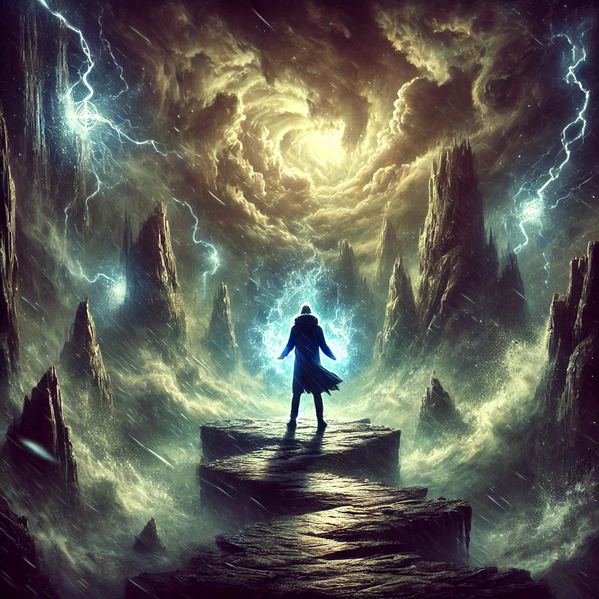

The path ahead quakes beneath your feet, the air vibrating with a chaotic energy that seems to come from all directions. The compass in your hand pulses erratically, its light flickering as if mirroring the turmoil around you. The landscape twists and warps, revealing jagged cliffs, swirling winds, and flickers of lightning.
You steady yourself and take a deep breath, sensing that this turbulence is not merely external. It feels connected to something deep within—a storm of unresolved emotions, unanswered questions, and unspoken fears.
A commanding voice echoes through the chaos, steady and unwavering:
“The storm is not your enemy, but your reflection. To face it is to face yourself. Will you step forward, or let the winds push you back?”
The turbulence intensifies, offering no clear path but demanding action. You must choose how to navigate the storm.

How will you face the turbulence?